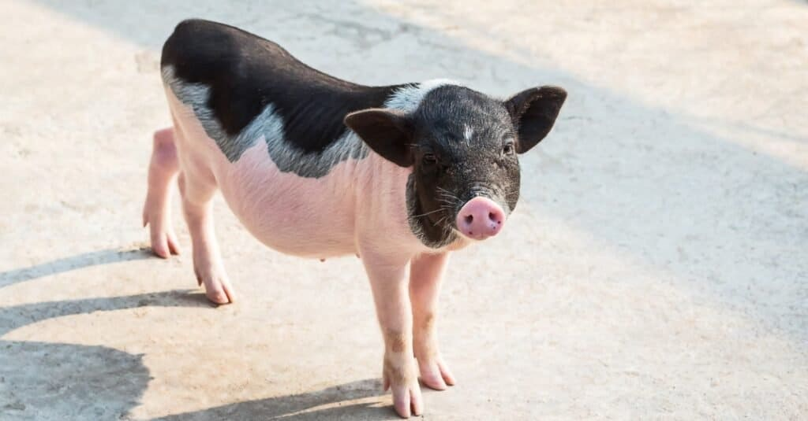

10
Best Emotional Support Animals

1. Dogs

2. Cats

3. Rabbits

4. Guinea Pigs (And Other Rodents)

5. Miniature Horses And Ponies

6. Parrots

7. Pigs And Miniature Pigs

8. Chickens

9. Sheep And Goats

10. Llama And Alpacas